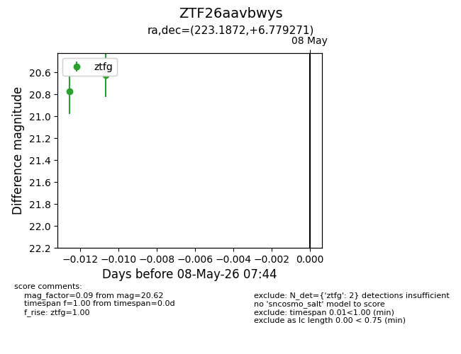
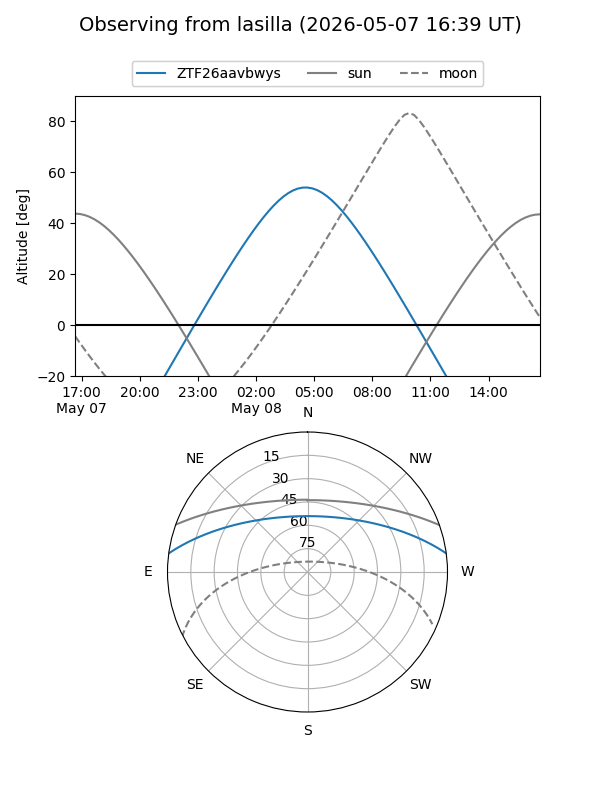
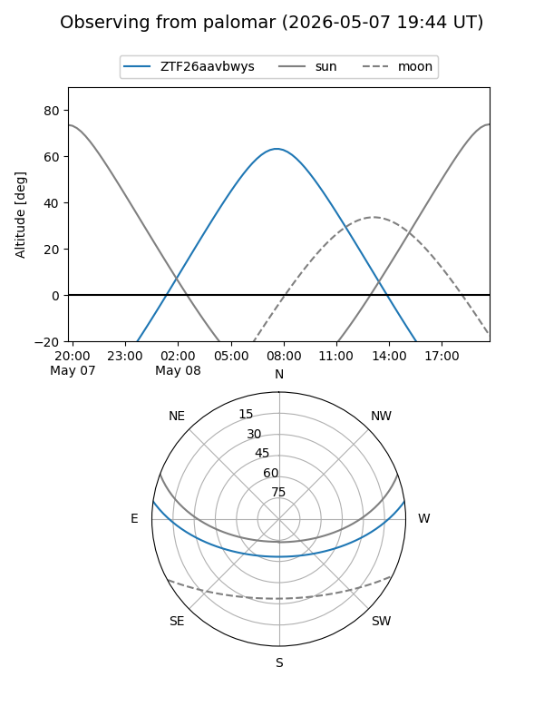

ZTF26aavbwys
Target ZTF26aavbwys at 2026-05-08 07:46
Aliases and brokers:
FINK: link
Lasair: link
ALeRCE: link
alt names
ZTF26aavbwys (ztf,fink_ztf)
Coordinates:
equatorial (ra, dec) = 223.1872,+6.77927
equatorial (HMS+DMS) = 14:52:44.94,+06:46:45.37
galactic (l, b) = (3.2517,+54.75080)
Flags:
Photometry:
last ztfg=20.62
2 ztfg detections
Lightcurve

Visibility


Additional plots